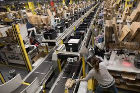
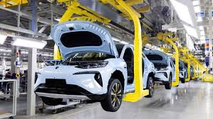

Orașe precum Shanghai, Beijing, Shenzhen și Guangzhou sunt centre economice globale.


China produce de la telefoane și mașini până la îmbrăcăminte, jucării și echipamente medicale.
 China are una dintre cele mai mari economii din lume — fiind considerată „fabrica planetei”.După reformele economice începute în anii 1980, China a trecut de la o economie planificată la una de piață, cu o dezvoltare spectaculoasă.